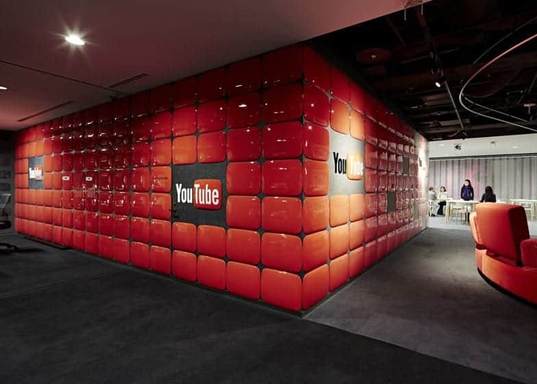

QUÉ ES?

YouTube es un sitio web de origen estadounidense dedicado a compartir videos. Presenta una variedad de clips de películas, programas de televisión y vídeos musicales, así como contenidos amateur como videoblogs y YouTube Gaming. Las personas que crean contenido para esta plataforma generalmente son conocidas como youtubers.
Fue creado por tres antiguos empleados de PayPal en febrero de 2005 y, en octubre de 2006 fue adquirido por Google Inc. a cambio de 1650 millones de dólares y ahora opera como una de sus filiales. Es el sitio web de su tipo más utilizado en internet.
YouTube usa un reproductor en línea basado en HTML5, que incorporó poco después de que la W3C lo presentara y que es soportado por los navegadores web más difundidos. Antiguamente su reproductor funcionaba con Adobe Flash, pero esta herramienta fue desechada en 2016. Los enlaces a vídeos de YouTube pueden ser también insertados en blogs y sitios electrónicos personales usando API o incrustando cierto código HTML.
El 29 de agosto de 2017, YouTube dio a conocer algunos cambios en el diseño de su versión web y presentó un nuevo logotipo, que por primera vez separa el nombre del ícono.
A partir de agosto de 2018, el sitio web está clasificado como el segundo sitio más popular del mundo, según Alexa Internet, justo detrás de Google. A partir de mayo de 2019, se suben a YouTube más de 500 horas de contenido de vídeo cada minuto. Según los ingresos publicitarios trimestrales reportados, se estima que YouTube tiene ingresos anuales de US $ 15 mil millones.
YouTube se ha enfrentado a críticas sobre aspectos de sus operaciones, incluido el manejo del contenido con derechos de autor contenido en los videos subidos, sus algoritmos de recomendación que perpetúan videos que promueven teorías de conspiración y falsedades, albergan videos aparentemente dirigidos a niños pero que contienen violencia o sugerencia sexual, videos de menores que atraen actividades pedófilas en sus secciones de comentarios y políticas fluctuantes sobre los tipos de contenido que pueden ser monetizados con publicidad.
HISTORIA

YouTube fue fundado por Chad Hurley, Steve Chen y Jawed Karim en febrero de 2005 en San Bruno, California. Todos ellos se conocieron cuando trabajaban en PayPal, Hurley y Karim como ingenieros y Chen como diseñador.11
Antigua sede de YouTube hasta 2017.
De acuerdo con Hurley y Chen, la idea de YouTube surgió ante las dificultades que experimentaron al tratar de compartir vídeos tomados durante una fiesta en San Francisco. Esta historia ha sido considerada una versión muy simplificada, y Chen ha reconocido que esta idea se puede haber promovido por la necesidad de presentar una historia sencilla al mercado.11 Karim ha declarado que la fiesta nunca ocurrió, y que la idea de compartir vídeos en Internet fue suya.11 Sus compañeros han declarado que la fiesta sí ocurrió, y que la idea original de Karim era crear una página de citas, donde las personas pudiesen calificarse sobre la base de sus vídeos. Karim reconoce haber sido influenciado por un sitio de citas llamado HotorNot.com, donde los usuarios podían cargar fotos suyas, que luego eran calificadas por otros usuarios.11
Chad Hurley, uno de los tres fundadores de YouTube.
El dominio fue activado el 14 de febrero de 2005,12 y el 23 de abril fue cargado el primer vídeo, Me at the Zoo (‘Yo en el zoológico’).13 En la primavera YouTube entró en línea. Sin embargo, los creadores se percataron rápidamente de que los usuarios cargaban toda clase de vídeos, dejando atrás la idea original. El tráfico se disparó cuando la gente empezó a colocar enlaces de YouTube en sus páginas de MySpace.11 El rápido crecimiento del sitio atrajo a Time Warner y Sequoia Capital, que invirtieron en el mismo. Luego de que, en octubre de 2005, la empresa Nike colocara un spot protagonizado por Ronaldinho, grandes compañías empezaron a sentirse atraídas por YouTube.11 Solo en 2005, Sequoia tuvo que invertir 8,5 millones de dólares estadounidenses en el sitio.
Para diciembre de 2005, las páginas de YouTube eran visitadas unas 50 millones de veces al día. Sin embargo, luego de que el vídeo musical Lazy Sunday, transmitido originalmente en el show Saturday Night Live, fuera cargado a YouTube, las visitas se dispararon de nuevo hasta alcanzar las 250 millones de visualizaciones diarias. Para mayo de 2006, según Alexa.com, YouTube alcanzó los 2000 millones de visualizaciones por día, y para mediados de agosto había alcanzado la marca de 7000 millones en diversas oportunidades;13 además, se había convertido en el décimo sitio más visitado en Estados Unidos. En aquel momento, el New York Post estimó que YouTube debía valer entre 600 y 1000 millones de dólares estadounidenses.13 MySpace.com y Google publicaron sus propias versiones de YouTube, sin éxito.
0:20CC
Me at the zoo, el primer vídeo subido a YouTube.
Para octubre de 2006, las oficinas de YouTube permanecían en el condado de San Mateo, ubicadas en el segundo piso de un edificio, y contaba con unos 60 empleados. Un ejecutivo de Universal Music Group había anunciado hace poco que «YouTube les debía decenas de millones de dólares», por violación de derechos de autor. Mark Cuban, cofundador de Broadcast.com, un servicio de radio por Internet comprado por Yahoo en 1999, había declarado un mes antes que «solo un tonto compraría YouTube por los potenciales problemas legales que enfrentaría». No obstante, los propietarios del sitio ya se habían comprometido con Warner Music para mejorar el servicio, de manera tal que pudiesen detectar más rápidamente cuándo un vídeo de su propiedad era cargado al sitio. No obstante, a inicios de ese mes se publicó un reporte en el Wall Street Journal que indicaba que Google iba a comprar YouTube por 1600 millones de dólares. Dicha información inicialmente fue negada por YouTube y Google, que la calificaron como rumores.
Oficinas de YouTube, en San Bruno, California; después de su compra por Google.
Ese mismo mes Google compró YouTube por 1650 millones de dólares en acciones. En el momento de la compra 100 millones de vídeos en YouTube eran visualizados y 65 mil nuevos vídeos era añadidos diariamente. Además, unos 72 millones de personas la visitaban por mes. Hurley y Chen mantuvieron sus cargos, al igual que los 67 empleados que en ese momento trabajaban en la empresa. En los días anteriores, YouTube había firmado dos acuerdos con Universal Music Group y la CBS; y Google había firmado acuerdos con Sony BMG y Warner Music para la distribución de vídeos musicales.
Para junio de 2008, el 38 % de los vídeos visualizados en Internet provenían de YouTube; el competidor más cercano solo llegaba a representar el 4 %. Aunque Google no reveló las cifras, se estimó que el sitio generó 200 millones de dólares estadounidenses ese año. En ese mes, un anuncio en la página de inicio de YouTube costaba 175 000 dólares diariamente, y el cliente debía comprometerse a gastar 50 000 dólares adicionales en anuncios en Google u otras páginas de YouTube. Sin embargo, debido a que el contenido de la vasta mayoría de los vídeos en YouTube no atraían a los anunciantes, los precios de los anuncios se colapsaron. YouTube procedió a presionar a los estudios de cine y televisión para que produjeran contenido audiovisual de calidad, y les ofreció canales destacados, donde podían presentar anuncios de estrenos de películas y cortos de televisión. También llegó a colocar anuncios antes del inicio de un vídeo, pero luego descubrieron que el 70 % de los usuarios abandonaba el sitio antes de que este terminase.17
La relación de YouTube con las empresas productoras de televisión y cine ha sido variada. Viacom continúa la demanda contra YouTube por 1000 millones de dólares, iniciada en marzo de 2007, por supuesta violación masiva de derechos de autor. Por otro lado, Disney firmó a finales de marzo de 2009 un acuerdo con YouTube, autorizando la transmisión de vídeos cortos de la ABC y ESPN. Disney podrá presentar anuncios en YouTube gracias a este trato. En abril de 2009 Google anunció que YouTube firmó alianzas con algunos estudios de Hollywood para que el sitio pudiese mostrar programas de televisión y películas completas. En enero de 2010, se lanza YouTube Rentals, un servicio de videoclub por Internet con películas completas que se pueden ver al instante previo pago.20
En los últimos años, Google todavía no ha logrado convertir efectivamente el alto tráfico de YouTube en ganancias; la empresa ha reconocido esto, pero se ha negado a proporcionar las cifras. De acuerdo con un artículo de la revista Forbes, se estimaba que YouTube generaría 240 millones de dólares en 2009, quedando muy por debajo de los 710 millones en costos operativos del sitio. Según un analista de la Credit Suisse, YouTube estaría presentando pérdidas por 470 millones de dólares estadounidenses en 2009; sin embargo, otras empresas estiman las pérdidas en 174,2 millones.
En 2015, se consideraba que YouTube no era rentable, siendo que en 2014 reportó ingresos por $4.000 millones de dólares, frente a los $3000 millones del año anterior, pero luego de pagar por el contenido y los equipos que reproducen de forma rápida los videos, el balance quedó en un punto de equilibrio, o sea que no ganó ni perdió dinero.Estos resultados reflejan las dificultades que tiene para expandir su audiencia que está conformada principalmente por adolescentes y preadolescentes. La mayoría de los usuarios utiliza al sitio como un depósito de videos a los cuales se accede desde enlaces o código insertado que son publicados en otras páginas, en lugar de visitar YouTube.com.
En febrero de 2015, YouTube lanzó una aplicación móvil conocida como YouTube Kids. La aplicación está diseñada para los niños, y cuenta con una interfaz simplificada, con selecciones de canales cuyo contenido sea apropiado para niños y funciones de control parental. Más tarde, el 26 de agosto de 2015, YouTube lanzó YouTube Gaming, un sub-sitio orientado a juegos de vídeo y una aplicación que pretende competir con la Twitch.tv de Amazon.com. En el año 2015 también se anunció un servicio prémium de YouTube titulado YouTube Red, que ofrece a los usuarios contenido libre de anuncios y también la posibilidad de descargar videos entre otras cosas. El 10 de agosto de 2015, Google anunció que estaba creando una nueva compañía, Alphabet, para actuar como holding de Google, con el cambio en la información financiera a partir del cuarto trimestre de 2015. YouTube sigue siendo una subsidiaria de Google. En enero de 2016, YouTube amplió su sede en San Bruno al comprar oficinas por 215 millones de dólares. El complejo puede albergar hasta 2800 empleados.
NOMBRE

YouTube literalmente traduce al español como ‹tú televisión›. You ‹tú, usted› representa que el contenido es generado por el usuario y no por el sitio en sí, de ahí su eslogan "difunde tú mismo". Tube (que tiene muchos significados) ‹televisión› es un guiño hacia un término original antiguo para televisión y los primeros monitores que eran comunes para cuando la empresa estaba empezando.
En Estados Unidos, tubo es sinónimo de televisión, y hace referencia a los tubos de rayos catódicos, además las cámaras de vídeo tenían un tubo como componente para emitir imágenes. Los anuncios de televisores promocionaban la última tecnología detrás de sus "tubos de imágenes en color" y dieron popularidad al término en los años 70 y 80, pero desde entonces ha estado en declive.
La palabra "televisión" contiene el prefijo griego "tele", que significa "a distancia". En tal sentido, las transmisiones en un principio no se podían grabar, por lo que toda la programación iba en directo. Sólo a partir de la utilización de los tubos al vacío, se logró re-transmitir el mismo programa pero con horarios diferentes.
CARACTERISTICAS Y UTILIDAD
CARACTERÍSTICAS
UTILIDADES
REWIND
YouTube Rewind es el título de una serie de videos creados por el canal oficial de YouTube creado por el propio YouTube.
El propósito de estos videos es resaltar eventos significativos del año al tener algunas de las celebridades más populares actuales de la cultura pop, especialmente de YouTube, bailando y actuando sobre los diversos temas de tendencias que sucedieron desde el principio hasta el final del año como tributo. a sus creadores, así como a los espectadores que miran.
Los videos a menudo incluyen una combinación de varias canciones populares de ese año con imágenes llenas de huevos de Pascua y se sabe que son algo que muchos esperarían al final del año, a pesar del odio que está comenzando a recibir.
YouTube literalmente traduce al español como ‹tú televisión›. You ‹tú, usted› representa que el contenido es generado por el usuario y no por el sitio en sí, de ahí su eslogan "difunde tú mismo". Tube (que tiene muchos significados) ‹televisión› es un guiño hacia un término original antiguo para televisión y los primeros monitores que eran comunes para cuando la empresa estaba empezando.
En Estados Unidos, tubo es sinónimo de televisión, y hace referencia a los tubos de rayos catódicos, además las cámaras de vídeo tenían un tubo como componente para emitir imágenes. Los anuncios de televisores promocionaban la última tecnología detrás de sus "tubos de imágenes en color" y dieron popularidad al término en los años 70 y 80, pero desde entonces ha estado en declive.